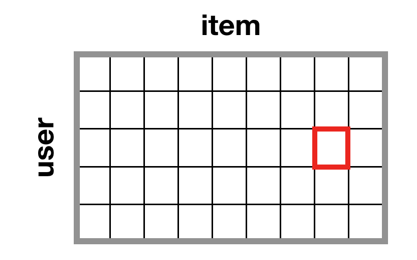
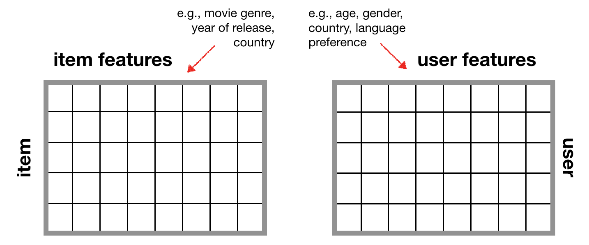

What is a recommendation system?¶
A recommendation system is an algorithm that matches items to users. Its goal is to predict a user’s preference toward an item.
Examples¶
- recommending products based on past purchases or product searches (Amazon)
- suggesting TV shows or movies based on prediction of a user’s interests (Netflix)
- creating well-curated playlists based on song history (Spotify)
- personalized ads based on “liked” posts or previous websites visited (Facebook)
The two most commonly used methods for recommendation systems are: 1) collaborative filtering, and 2) content-based filtering.
Collaborative Filtering¶
Collaborative filering (CF) is based on the concept of homophily - similar users will like similar items. It uses item preferences from other users to identify which item a particular user will like best. Collaborative filtering can be divided into two algorithms: memory-based or model-based.
Memory-based algorithms look at item-item, user-item, or user-user similarity using different similarity metrics such as Pearson correlation coefficient, Jaccard similarity, etc. This approach is easy and very interpretable. However, its performance decreases as the dataset becomes more sparse.
Model-based algorithms use matrix factorization techniques such as SVD and NMF to extract “hidden”, meaningful factors from the dataset.
{kind=link}
Content-based Filtering¶
Content-based filtering looks at user and item features to generate personalized recommendations. Content-based filtering handles the cold start problem because it can generate personalized recommendations for brand new users and features.
{kind=link}
How do we define a user’s “preference” towards an item?¶
There are two types of feedback data:
- Implicit feedback (e.g., number of times a user has watched a movie)
- Explicit feedback (e.g., movie ratings)